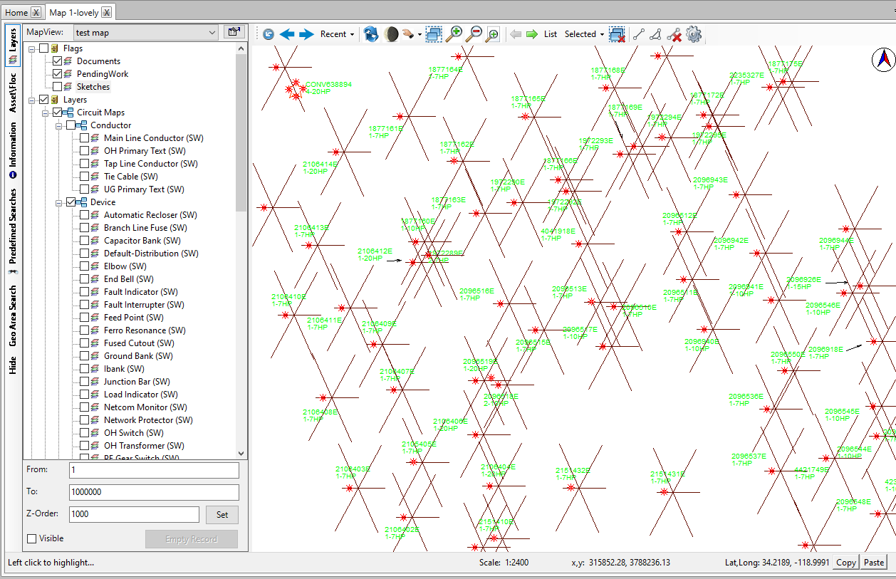
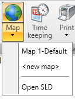
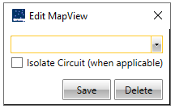

Map

The user can use the Map feature to locate work items and assets
directly on the map. The client provides various sets of map views, map
layouts, and map tools that enable the user to use the map efficiently.
Some additional toolbars have been added within the map.
To create a new map the user navigates to Maps and then New map as shown below.

After clicking new map, a new MapView launches and the user can save by
the map by clicking on the edit MapView button, which opens the
following dialog box.

The following are the toolbars used within the map.
-
Redlining Section - Allows the user to do free hand, polyline, polygon, arc string, rectangle, circle, symbol, text, set redline color, setting a line style and size, and font, copying and new redline.
-
Recent view, previous view, next view
-
Refreshing map icon
-
Day / Night mode
-
Pan mode
-
Selection mode/Options - The user can use it to group to manipulate the selections that have been made, or influence what types of objects can be selected with the next select operation.
-
Zoom in and out, zoom rectangle mode.
-
Previous/next selection - The user can use the Previous icon to navigate to an earlier selected object. Doing so, The user can view the information of an object The user viewed earlier. This option is available only if The user had previously chosen the Next selection.
-
List
-
Go to a specific selection - The user can use the Selected icon to display a list of all the items that are currently selected and allow The user to jump to the object to view its information. A maximum of 20 objects can be displayed in this list at one time.
-
Clear selection - The user can use the Clear selection icon to clear all the selections made on the map. The Clear selection icon is enabled only if the user has selected an object. Any objects that are highlighted are reset to their default color, and the status bar is cleared.
-
-
Measurements
-
Line
-
Area
-
Delete all measurements.
-
-
Configure map toolbar.
-
Nodes
-
Insert
-
Move
-
Delete
-
Reverse
-
Change Style
-
Save
-
Cancel edit.
-